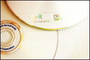
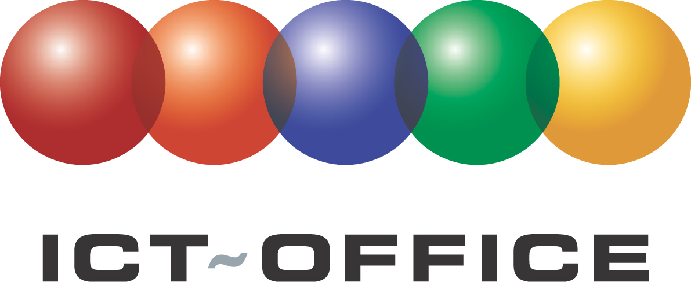

Freeware
Freeware is software die je gratis legaal mag gebruiken.
In 2006 werd in opdracht van de Vlaamse overheid een cd samengesteld met een selectie van nuttige freeware software die kan gebruikt worden in het onderwijs.
Op
deze cd staan 3 'soorten' programma's:
- educatieve programma's voor het (lager) onderwijs
- programma's voor algemeen gebruik (zoals bijvoorbeeld office)
- open inhoud
Je kan deze cd hier helemaal downloaden. Omdat het over 502MB gaat (de download kan dus even duren) is het misschien interessant eerst de inhoud even na te gaan in deze infobrochure.
Wanneer je op de downloadknop hieronder klikt, bekom je het iso bestand van 502MB. Dit iso bestand kan je met een cd schrijfprogramma naar een lege cd branden met een optie zoals 'branden iso bestand naar cd'.
Je kan het iso bestand ook rechtstreeks 'uitpakken op je harde schijf' met bijvoorbeeld 7zip.